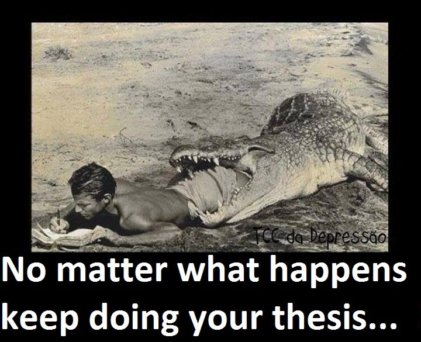
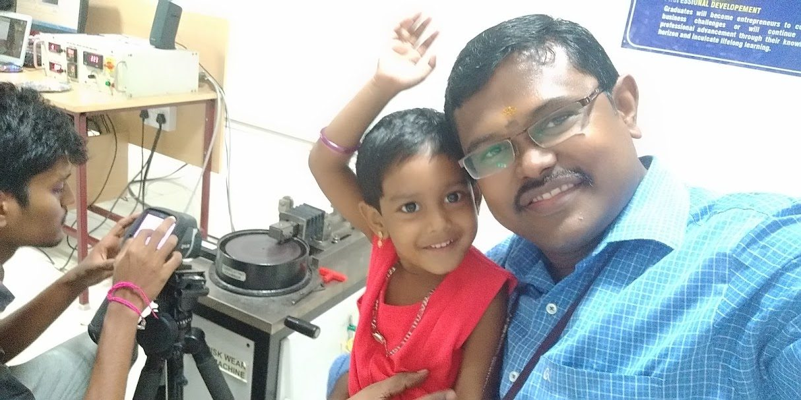
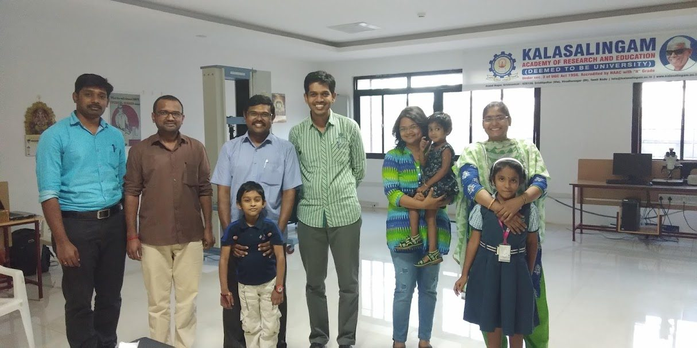
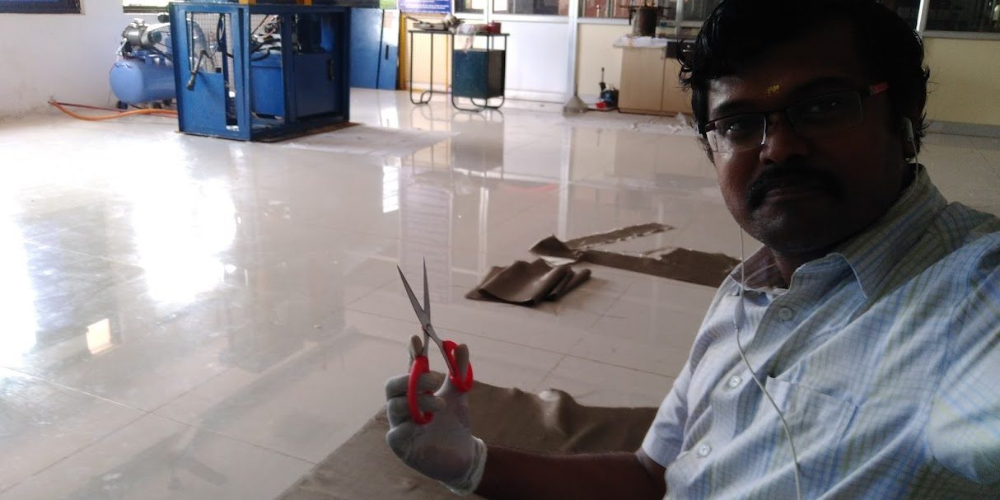
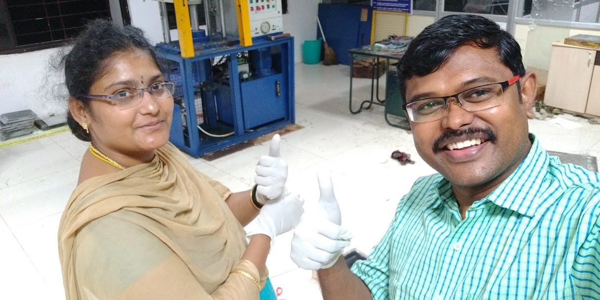
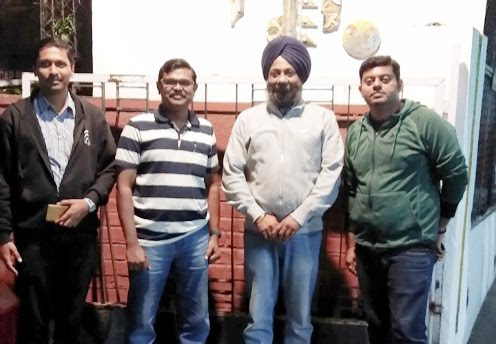
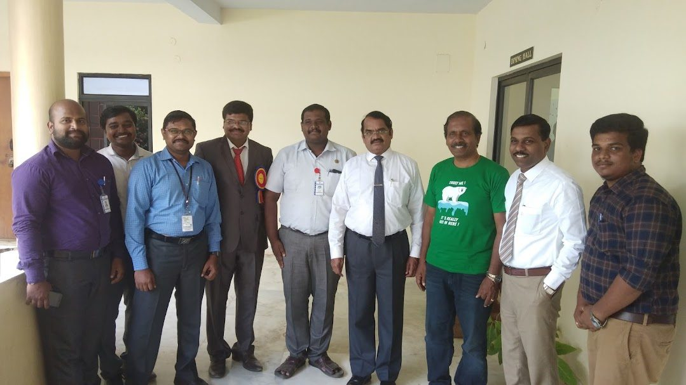
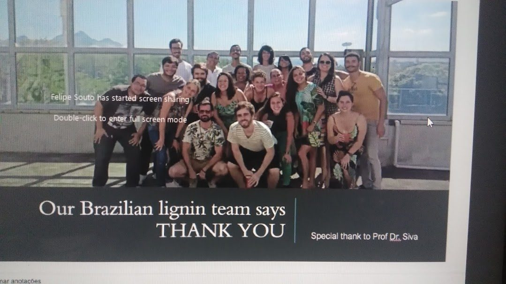

Highlights
The human side of two decades of research
A research life is more than publications. Here is the lab mantra that drives it, the family that supported it, the experts encountered along the way, and the gratitude of a team on the other side of the world.
Lab Mantra
"No matter what happens, keep doing your thesis."
The single rule posted in the composite materials lab at Kalasalingam University — and lived by every student who passed through it.

Work-Life Balance
Research is a family affair
Most of two decades were spent at the research lab — and the family came along. Children grew up around composite specimens and testing rigs. That shared life is part of what made the work possible.




Meet of Experts
With colleagues and mentors

With Prof. Inderdeep Singh (IIT Roorkee) and Dr. Annathurai

Credits from Brazil
"Our Brazilian lignin team says: Thank You"
The LaPol research team at UFRGS, Porto Alegre — the group Dr. Siva spent a year with as a postdoctoral researcher in 2014, under Prof. Sandro C. Amico. Their collaborative work produced five joint publications, two workshops, and an ongoing research partnership.
